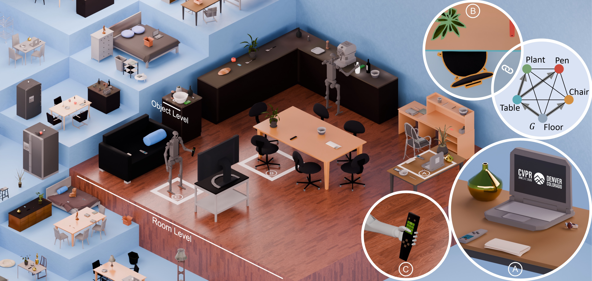
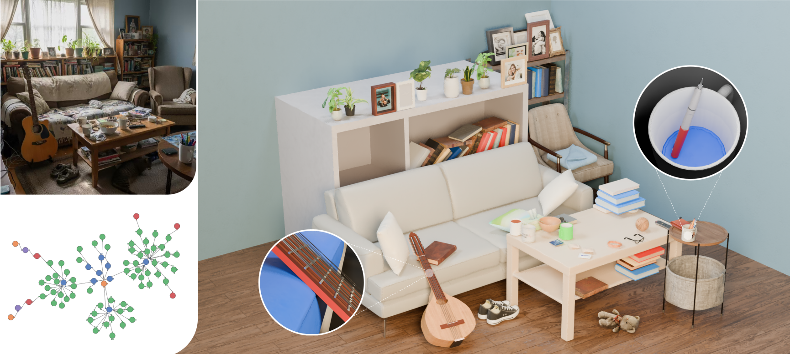
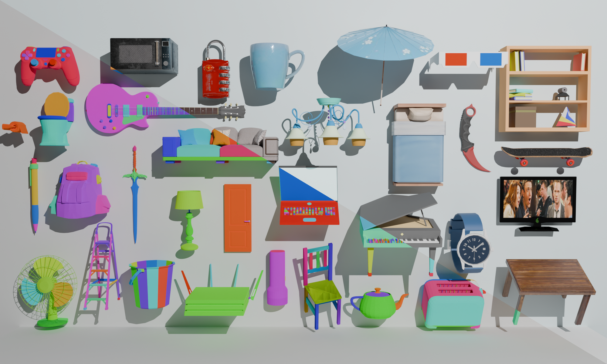
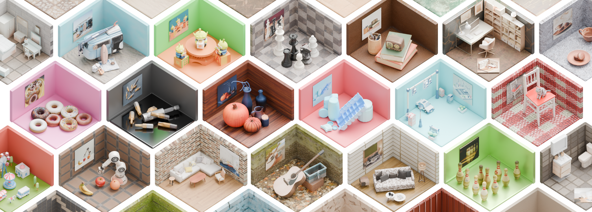
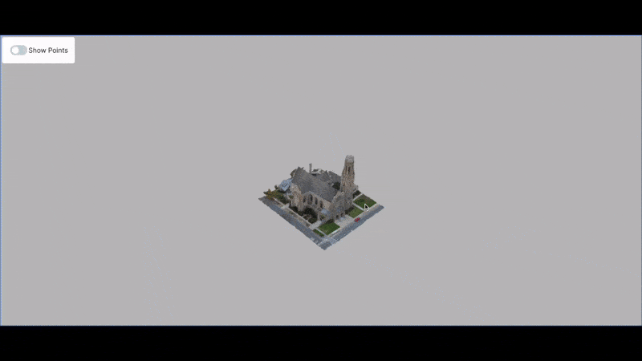
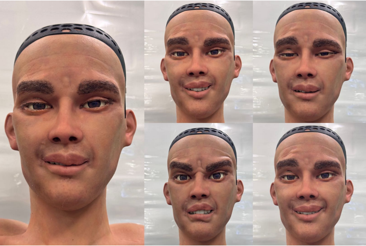

PartNeXt: A Next-Generation Dataset for Fine-Grained and Hierarchical 3D Part Understanding
NeurIPS 2025 (DB Track)



ExFace: Expressive Facial Control for Humanoid Robots with Diffusion Transformers and Bootstrap Training
IROS 2025